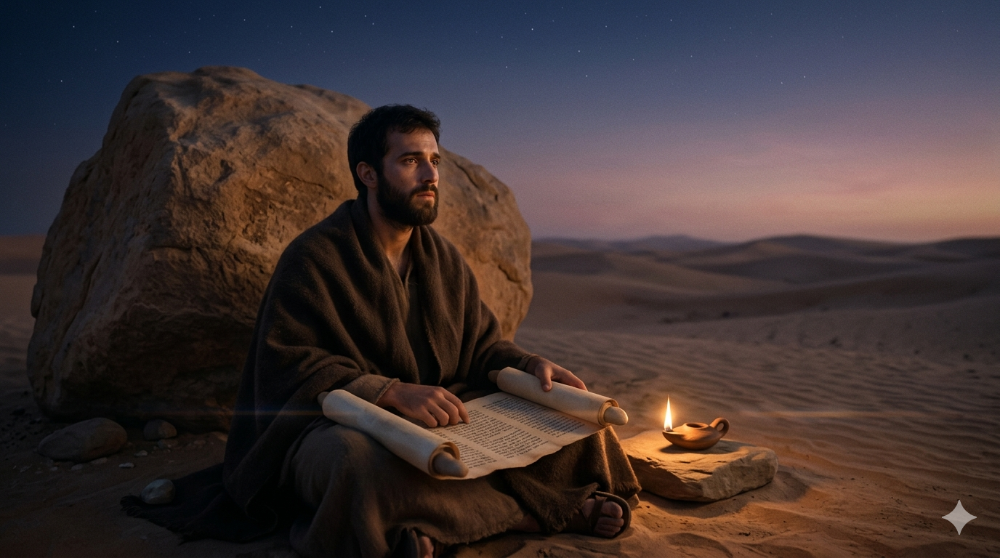

아라비아 광야의 새벽, 홀로 거대한 바위 아래 앉아 두루마리 위로 몸을 숙인 한 사람의 뒷모습.
형제들아 내가 너희에게 알게 하노니 내가 전한 복음은 사람의 뜻을 따라 된 것이 아니니라. 이는 내가 사람에게서 받은 것도 아니요 배운 것도 아니요 오직 예수 그리스도의 계시로 말미암은 것이라. 그 때에 나는 사람과 의논하지 아니하고 또 나보다 먼저 사도 된 자들을 만나려고 예루살렘에 올라가지 아니하고 아라비아로 갔다가 다시 다메섹으로 돌아갔노라. — 갈라디아서 1:11-12, 16-17
다메섹 도상에서 부활하신 주님을 만난 이후, 사울은 눈이 멀어 사흘을 보내다 아나니아의 안수로 눈을 뜨고 세례를 받았습니다. 회당에서 곧바로 예수가 하나님의 아들임을 전파하여 사람들을 놀라게 하고, 유대인들의 살해 음모를 피해 광주리를 타고 다메섹 성벽을 탈출한 후 — 그의 발길은 예루살렘이 아닌 아라비아를 향합니다. 갈라디아서 1장 17절에 담긴 이 한 문장은 성경 전체에서 가장 조용한 문장 중 하나입니다. "아라비아로 갔다가." 삼 년이라는 시간이 그 짧은 문장 속에 접혀 있습니다.
아라비아 광야에서 그는 무엇을 했을까요? 성경은 구체적인 내용을 말하지 않습니다. 그러나 바울이 훗날 쓴 모든 서신 — 로마서의 신학적 깊이, 갈라디아서의 복음적 열정, 에베소서의 우주적 교회론 — 이 모두 어디선가 익어야 했다면, 그 아라비아의 침묵이 그 숙성의 시간이었을 것입니다. 바울은 히브리 성경을 처음부터 다시 읽었을 것입니다. 그가 바리새인으로 그토록 정통하게 알고 있던 율법과 선지서를, 이제 다메섹 도상에서 만난 한 분의 눈으로 다시 펼쳐 보았을 것입니다. 광야는 하나님이 가장 자주 말씀하시는 곳이었고, 침묵은 하나님이 가장 깊이 가르치시는 언어였습니다.
광야의 별빛 아래, 모닥불 곁에 앉아 두 눈을 감고 깊은 묵상에 잠긴 바울의 옆모습.
우리는 무언가 중요한 경험을 하면 곧바로 무언가를 해야 한다는 강박을 느낍니다. 은혜를 받으면 즉시 나눠야 하고, 변화가 있으면 바로 증명해야 할 것 같습니다. 그러나 바울은 회심의 충격을 광야의 침묵 속에서 삼 년이나 소화했습니다. 하나님은 때로 우리를 아무도 없는 곳, 아무것도 되지 않는 시간 속으로 이끄십니다. 그 시간이 낭비처럼 느껴질 수 있지만, 하나님의 눈에는 그 침묵이 가장 풍성한 준비의 시간입니다.
지금 당신이 어떤 '광야의 시간'을 보내고 있다면 — 잘 보이지 않는 자리, 기다림만 남은 계절, 아무 결과도 나오지 않는 시간 — 그것이 하나님이 당신을 망각하신 것이 아님을 기억하십시오. 사울의 삼 년 광야는 훗날 이방인 세계를 뒤흔들 복음의 신학이 익어가던 밭이었습니다. 당신의 광야에서도 지금 무언가 깊은 것이 자라고 있을 것입니다.
광야는 형벌이 아닙니다. 광야는 준비입니다.
지금 당신의 침묵의 시간을 낭비하지 마십시오 — 그 고요 속에서 하나님의 음성에 귀를 기울이십시오.
삼 년의 광야가 수십 년의 사역을 낳았습니다.